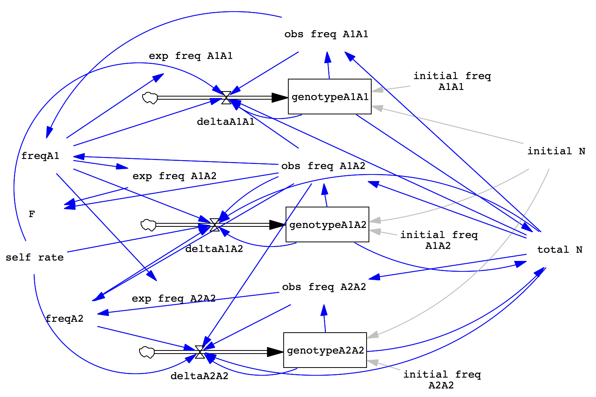

BIOL 322 Lab 7. Inbreeding
Angela Roles
Spring 2026
biol322-lab7.RmdWhen you have completed the exercise below, submit your model and your lab write-up via the Google Drive Form. Responses due by the following week’s lab period.
During lab, we will work in groups. Here are the groups assigned for today’s exercise:
- Natalie and Amanda
- Jordyn and Charlie
- Amy and Paige
- Natalie and Skylar
- Ella and Savannah
- Clara and Arc
- Miles and Emmy
Overview
In this exercise, we’ll modify the original Hardy-Weinberg model to include the effects of inbreeding, which is covered in Chapter 13 of your text (we’ll get to this after break).
Remember that in the original HW model, we combined gametes at random, according to their probabilities. But we know that mating is not always random! To break that assumption, we’ll need to change our flows to incorporate non-random mating. We could model a variety of forms of non-random mating but the most common one that we encounter in nature is inbreeding so that’s what we’ll work on here.
Recall that we are starting with a single locus and 2 alleles, continuing to model non- overlapping generations (adult die immediately after producing gametes). With random mating, every individual contributes gametes to the gene pool and then those are combined at random (following HW expected values) to form new zygotes. In contrast, inbreeding means that individuals will mate with relatives more often than expected by chance. Which is to say, they will more often than expected from HW proportions! So we’ll clearly need to alter our flows (where gametes are paired into zygotes) to adjust for inbreeding.
To keep things simple, we’ll consider selfing so that A1A1 individuals are more likely to mate with themselves, thus yielding more A1A1 zygotes than otherwise expected. And similarly for the other two genotypes. Note that this tendency to mate with oneself will not change allele frequencies, it will just reshuffle the existing alleles, thus changing genotype frequencies. Since allele frequencies won’t change but genotype frequencies will, we can estimate the inbreeding coefficient (F) to describe how inbred our population is compared to HW expectations for the given allele frequencies.
In natural populations, selfing is pretty normal, especially in plants where hermaphroditism is common. However, populations often display a mixed-mating system, meaning that individuals produce some offspring via inbreeding (such as selfing) and then some of their offspring result from outcrossing with unrelated mates. For example, in the annual plant jewelweed (Impatiens spp.), plants produce two types of flowers, cleistogamous (which pollinate themselves before opening) and chasmogamous (outcrossing flowers). These flower types even grow at different places on the plant - small cleistogamous flowers are close to the stem, pollinate themselves without even opening up, and drop their seeds at the base of the plant. Meanwhile, large, colorful chasmogamous (outcrossing) flowers are at the ends of branches, have only pollen or stigma receptive at a time, and produce seeds that burst explosively from their pods when ripe. An individual plant can thus adjust how much it inbreeds versus outcrosses based on how many of each type of flower it produces!
We’re going to incorporate this mixed-mating strategy into our model since the rate of inbreeding is likely to have consequences for how much genotypic diversity is depleted. You will also see that if we assume that the population does a mixture of inbreeding and outcrossing, then we will expect to reach an equilibrium that does still include heterozygotes.
Here’s an image of the completed model for your reference.

Build the Inbreeding Model
Open the original HW model that you made in Lab 2 or use the file I created, found in the main drive folder (hwmodel.mdl) or linked on the agenda. Immediately after opening the file, save it with a new name (e.g., “inbreeding”).
Let’s add some new components! As mentioned, we want to estimate F, the inbreeding coefficient, so we’ll add that as a variable. We’ll graph this value so we can see how inbred the population is over time, estimated by how different the observed heterozygosity is from the expected value. When there is no inbreeding, Hobs and Hexp should be equal and that would give F = 0. If the population is completely inbred, that would equate to F = 1, where Hobs = 0. Conversely, if a population contained more heterozygotes than expected, we would see a negative value of F, telling us the population is more outbred than predicted by random mating.
-
After you create the F variable, add arrows pointing to F from obs freq A1A2 and exp freq A1A2 and then set the equation for F as in the table below.
Variable
Equation
Description
F
1 - (obs freq A1A2 / exp freq A1A2)
Inbreeding coefficient; the different between observed and HW expected heterozygosities
-
The other component we need to add will be a variable which we’ll call self rate, for “fraction of offspring from selfing”. The self rate variable will let us control how much inbreeding is occurring in the population. We’ll have a minimum of 0% offspring from selfing and a max of 100% offspring from selfing. Go ahead and create the self rate variable and then add arrows that point from self rate to each of the flows (deltaA1A1, deltaA1A2, deltaA2A2).
Variable
Equation
Min
Max
Incr
Description
self rate
0
0
1
0.01
Percent of offspring produced via selfing
Next, we need to update our flows to include our new self rate variable. This is how we will alter zygote formation to simulate inbreeding. Remember in the gene flow model where we had some alleles coming from residents and others coming from migrants? Our equa- tions to include selfing will be similar: one term representing offspring produced by selfing by the parent and a second term for offspring produced by outcrossing (HW random mating).
-
Before we change the flow equations though, we need to add a few more arrows. We need the following new arrows so the new flow equations will work:
-
Arrow from obs freq A1A1 to deltaA1A1
-
Arrows from obs freq A1A2 to deltaA1A1, deltaA1A2, and deltaA2A2
-
Arrow from obs freq A2A2 to deltaA2A2
-
-
Now, click Equations and then click on each flow to change the equation to match the table below.
Flow
New Equation
deltaA1A1
( (1 – self rate) * freqA1 * freqA1 + (obs freq A1A1 + 0.25 * obs freq A1A2) * self rate ) * total N - genotypeA1A1
deltaA1A2
( (1 – self rate) * 2 * freqA1 * (1-freqA1) + (0.5 * obs freq A1A2) * self rate ) * total N - genotypeA1A2
deltaA2A2
( (1 – self rate) * (1-freqA1) * (1-freqA1) + (obs freq A2A2 + 0.25 * obs freq A1A2) * self rate ) * total N - genotypeA2A2
In the above equations, the two terms (outcrossing and selfing) are separated by the + sign. The quantity (1 – self rate) represents the fraction of offspring resulting from outcrossing. Thus, this term is multiplied by the HW expected frequency for that genotype (for A1A1 that’s p2 or freqA1 ∗ freqA1 in the model). Meanwhile, self rate is the portion of offspring produced by a genotype selfing, thus we can’t use p2, we need to multiply by the observed frequency of the genotype that is selfing. For offspring that will be genotypeA1A1, all homozy- gous A1 individuals (obs freq A1A1) will produce genotypeA1A1 offspring via selfing. AND, 25% of the offspring of heterozygotes that self will also be genotypeA1A1. Make sure you remember to put the whole thing in parentheses, multiply it by totalN, and then subtract the current value of the genotype stock.
Now we are ready to test our model. Save your new model and then click Simulation Control to set up the following two runs. For each run, set up the conditions described in the table below.
| Trial | self rate | initial freq A1A1 | initial freq A1A2 | initial freq A2A2 | Description |
| A | 0 | 0.04 | 0.32 | 0.64 | No selfing, p=0.2, q=0.8 |
| B | 1 | 0.04 | 0.32 | 0.64 | Only selfing, p=0.2, q=0.8 |
After you set up and run the simulations, click on the obs freq of A1A1, A1A2, and A2A2, then click Graph. You should see that in trial A (no selfing), nothing happens, the lines are flat. We begin in HW proportions and nothing changes that. Both allele and genotype frequencies are unchanged, the graph for F shows a flat line at zero.
In trial B, we are simulating a population that ONLY selfs. In this case, the genotype frequency graph (and the F graph) should both show changes. But the allele frequencies graph remains flat, there are no changes to the numbers of each type of allele. Note that the outcome of only selfing is an equilibrium… with no heterozygotes left in the population. Now, we’ll take this model for a spin and investigate what happens when self rate is not at the extreme of 0 or 1 but somewhere in between!
Lab Write-Up
Questions
-
Varying self rate. Run the following trials with different values of self rate. Summarize the patterns you observed across these runs. How do they differ from one another? What happens to heterozygosity (look at both the observed frequency and also the F graph)? Does the population reach an equilibrium for allele and/or genotype frequencies?
Trial
self rate
initial freq A1A1
initial freq A1A2
initial freq A2A2
Description
1a
0.2
0.16
0.48
0.36
20% selfing, p=0.4, q=0.6
1b
0.4
0.16
0.48
0.36
40% selfing, p=0.4, q=0.6
1c
0.8
0.16
0.48
0.36
80% selfing, p=0.4, q=0.6
-
Varying starting genotype frequencies. Now let’s see what happens when we start a population far out of HW proportions - in fact with way more heterozygotes than expected. This scenario could represent an extreme case in which a population is fragmented by habitat loss or the appearance of some barrier causing population subdivision. The sudden decrease in population size could lead to increased inbreeding as the only way to successfully reproduce. Describe what happened in this run, comparing to results from previous trials (tests and trials 1a-c).
Trial
self rate
initial freq A1A1
initial freq A1A2
initial freq A2A2
Description
2
0.8
0.02
0.85
0.13
80% selfing, p=0.445, q=0.555
Reflection. Finally, in paragraph form, give me a summary of the ideas/patterns demonstrated in this model. Are any of them surprising to you? Or do they change how you think about the consequences of inbreeding? Be sure to reflect on how these results might influence thinking about inbreeding as a potential issue in conservation.
Remember to submit your model and responses via the Google Drive Form.